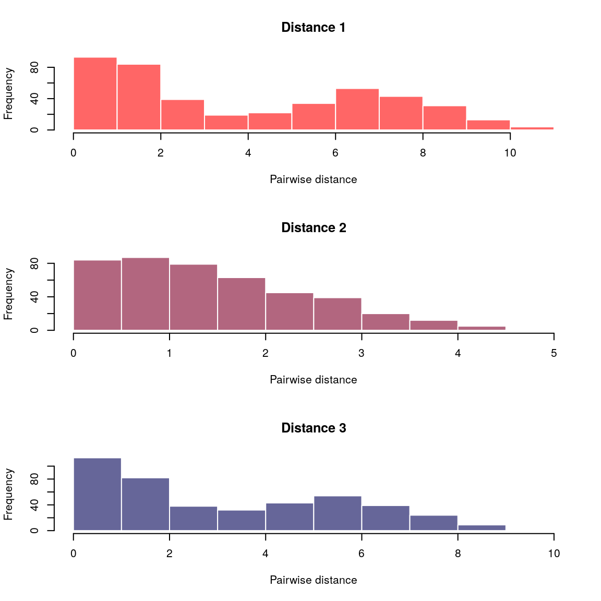
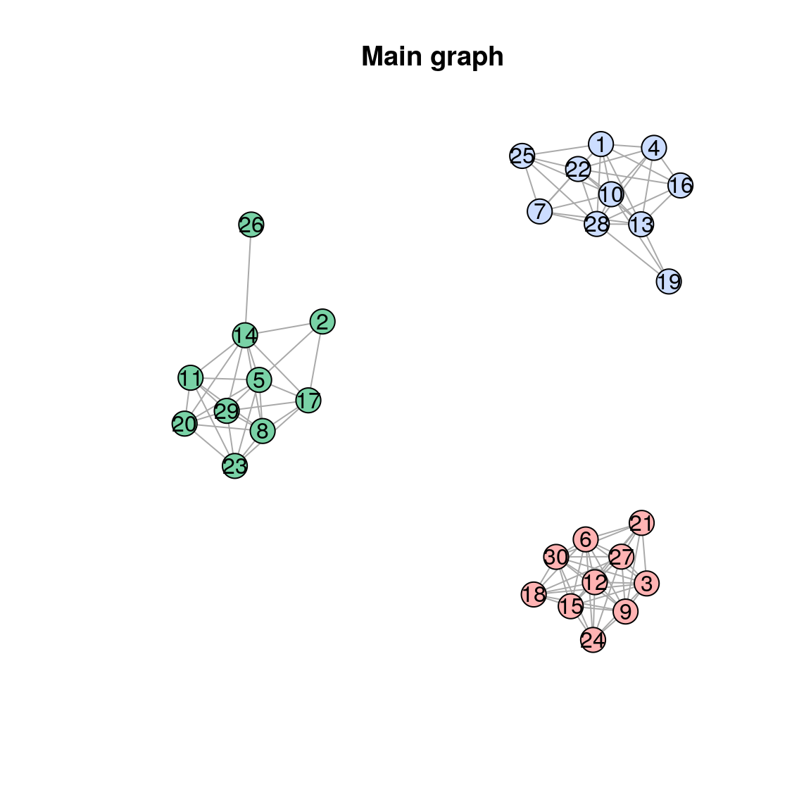
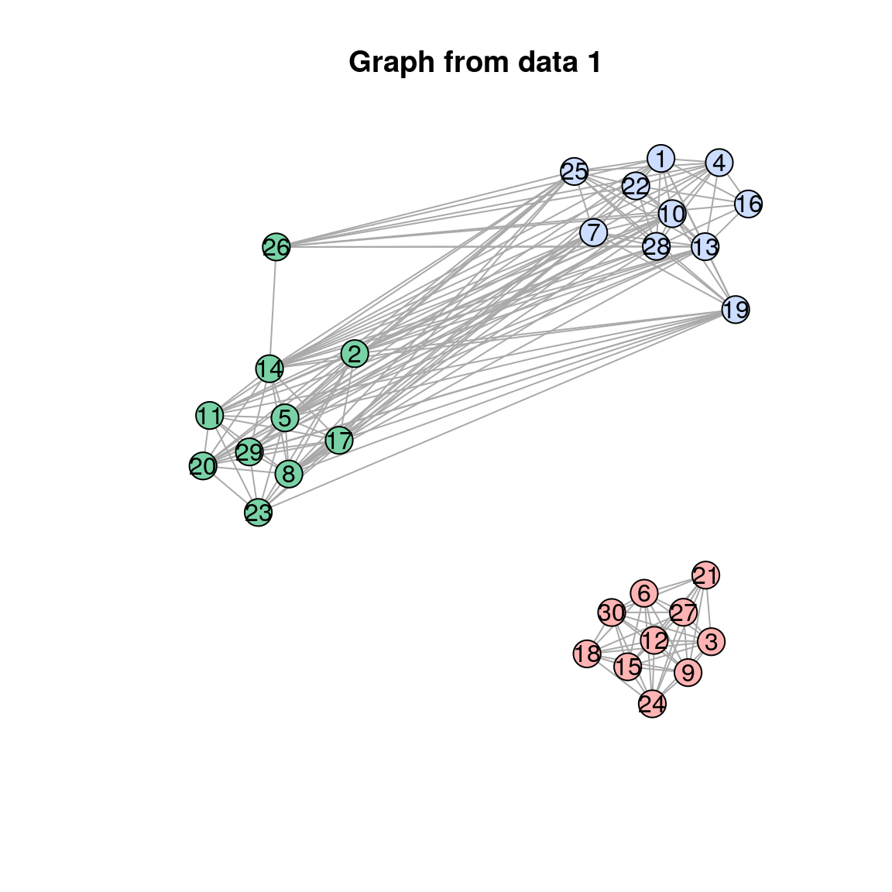
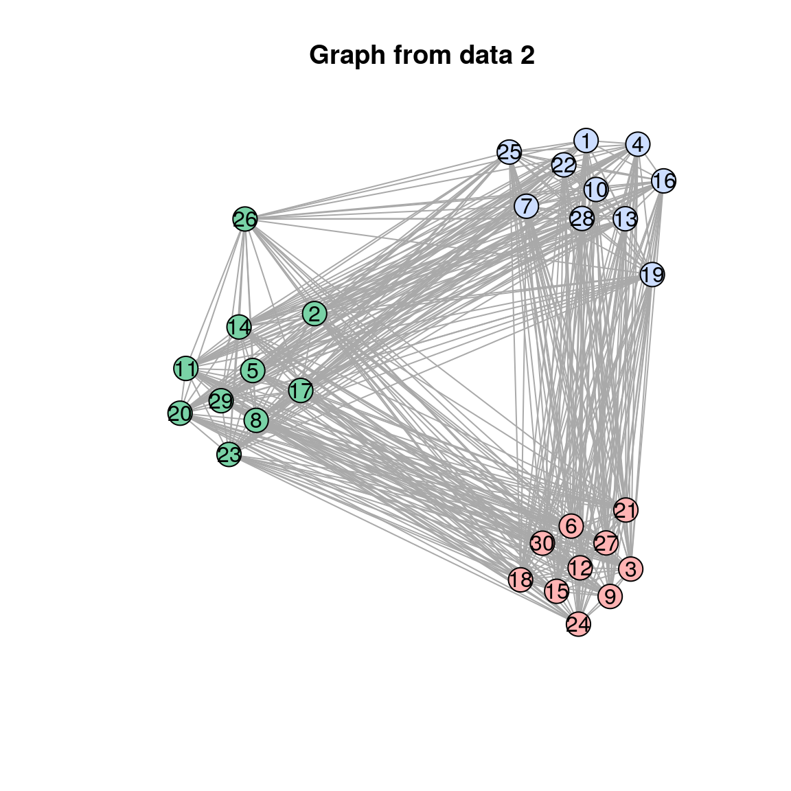
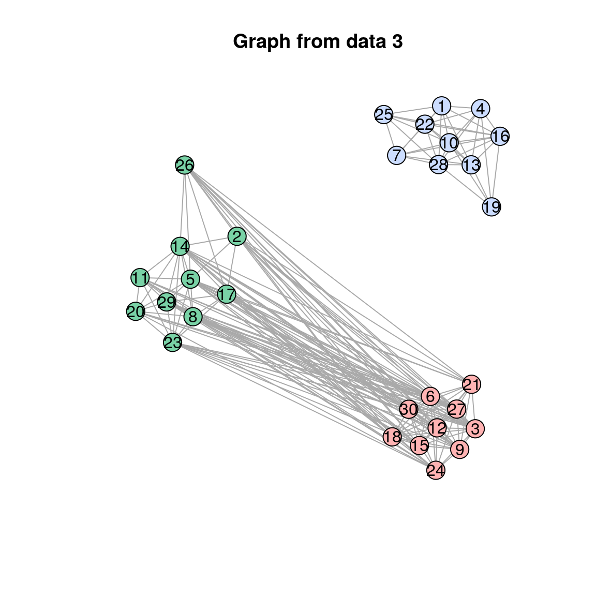

This vignette provides a short demonstration of the package using a dummy dataset.
We first simulate the data using 3 mixtures of 3 normal distributions, and compute Euclidean distances between the observations for each mixture. In practice, each mixture would be a different data type (e.g. location, time of onset of symptoms, genetic sequences of the pathogen):
set.seed(2)
dat1 <- rnorm(30, c(0,1,6))
dat2 <- rnorm(30, c(0,0,1))
dat3 <- rnorm(30, c(8,1,2))
x <- lapply(list(dat1, dat2, dat3), dist)The function vimes_data processes the data and ensures matching of the individuals across different data sources:
x <- vimes_data(x)
plot(x)
We can now run vimes on the data:
res <- vimes(x, cutoff = c(2,4,2))
names(res)
#> [1] "graph" "clusters" "cutoff" "separate_graphs"
res$graph
#> IGRAPH UN-- 30 104 --
#> + attr: layout_1 (g/n), layout_2 (g/n), layout_3 (g/n), layout
#> | (g/n), color_1 (v/c), color_2 (v/c), color_3 (v/c), size_1
#> | (v/n), size_2 (v/n), size_3 (v/n), label.family_1 (v/c),
#> | label.family_2 (v/c), label.family_3 (v/c), label.color_1 (v/c),
#> | label.color_2 (v/c), label.color_3 (v/c), name (v/c), color
#> | (v/c), size (v/n), label.family (v/c), label.color (v/c),
#> | weight_1 (e/n), weight_2 (e/n), weight_3 (e/n), label.color_1
#> | (e/c), label.color_2 (e/c), label.color_3 (e/c), label.color
#> | (e/c)
#> + edges (vertex names):
res$clusters
#> $membership
#> 1 2 3 4 5 6 7 8 9 10 11 12 13 14 15 16 17 18 19 20 21 22 23 24 25
#> 1 2 3 1 2 3 1 2 3 1 2 3 1 2 3 1 2 3 1 2 3 1 2 3 1
#> 26 27 28 29 30
#> 2 3 1 2 3
#>
#> $size
#> [1] 10 10 10
#>
#> $K
#> [1] 3
#>
#> $color
#> 1 2 3
#> "#ccddff" "#79d2a6" "#ffb3b3"The main graph is:
plot(res$graph, main="Main graph")
for(i in 1:3) {
plot(res$separate_graphs[[i]]$graph, main = paste("Graph from data", i))
}